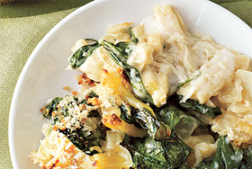

Feast For Days
About
Feasts
Recipes
Contact

Will's Feast
Host
Will Mederski
Location
South First & Congress, Austin, TX
1
Date
Wednesday May 16, 2012
Time
6:00
Duration
2 hours
1
The exact address will be sent to you after you join.
$7
For one serving of food
Join this Feast
What we're making
Cheese Baked Pasta